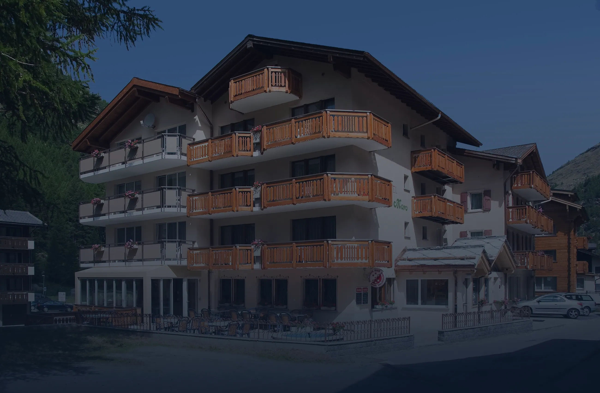
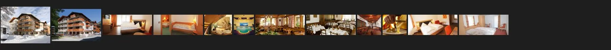
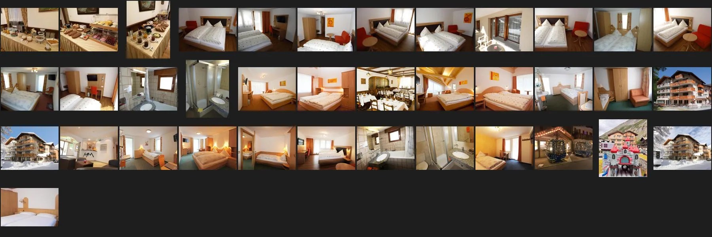
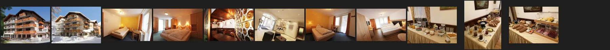
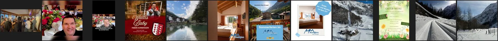
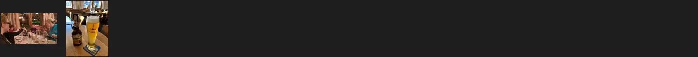

Station 3 · Der Sammler · 17.10.2026
Alles, was es überdas Monte-Moro gibt.
160 Bilder aus sechs Quellen, 3 Filme, 2 Speisekarten, 53 Texte. Das Material vom 09.10.2026 ist geprüft und ergänzt, nichts wurde doppelt geholt oder verschoben.
01Vorrat
Was da ist,Quelle für Quelle.
Gezählt aus den Ordnern. Grösste Fassung je Quelle in Pixel Breite. Neu am 17.10.2026 ist hell hinterlegt.
| Quelle | Bilder | Grösste | Herkunft | Rechte |
|---|---|---|---|---|
| Website monte-moro.ch_quelle/website/bilder | 88 | 1564 px | jedes Bild mit Adresse in herkunft.json, 09.10.2026 | Haus (Impressum: Hotel Monte-Moro oder genannte Rechtsinhaber) |
| Schweiz Tourismus_quelle/extern/myswitzerland | 10 | 3734 px | Originale aus der Datenbank von HotellerieSuisse, 17.10.2026 | vom Haus geliefert |
| Booking.com_quelle/extern/booking | 37 | 1440 px | vom Haus eingestellte Fotos, 09.10.2026 | vom Haus bei Booking eingestellt |
| TripAdvisor, vom Haus_quelle/extern/tripadvisor/vom-hotel | 11 | 2000 px | Fotos des Hauses, 2017 und 2018 eingestellt | Haus |
| Instagram @hotelmonte_moro_quelle/extern/ig | 12 | 640 px | zwölf Beiträge ohne Anmeldung, am 17.10.2026 unverändert | Haus |
| TripAdvisor, Gäste_quelle/extern/tripadvisor/gaestefotos | 2 | 2000 px | Fotos von Gästen | bei den Gästen, nur zur Anschauung |
Zu den Rechten: Alles ausser den Gästefotos und Gäste-Videos stammt vom Haus selbst, auf der eigenen Seite oder bei Portalen eingestellt; die Gäste-Bilder dienen nur zur Anschauung und kommen nie auf eine Seite.
02Bögen
Jedes Bildauf einen Blick.
Je Quelle ein Bogen. Gehört jedes Bild zu diesem Haus? Ja, bis auf die Wellness-Bilder (Spa des Partnerhotels) und die Bilder der Region ohne Herkunft.






03Neu seit dem 09.10.2026
Was heutedazukam.
Schweiz Tourismus
Zehn Originale aus der Datenbank von HotellerieSuisse, darunter die Sommerfassade mit 3734 × 2447 px, das schärfste Bild des Hauses. Dazu die Texte der Einträge «Monte-Moro Residence» und «Restaurant Röstihüs».
Englisch und Französisch
Die ganze Seite in beiden Sprachen, 32 Seiten als Text, und die französische Speisekarte. Die deutsche Seite ist seit dem 09.10.2026 unverändert.
Zwei Filme
Ein zweites Gäste-Video von 2022 und «Wallis Baby» vom Kanal «Fabian Zurbriggen» (09.10.2026), mit Szenen im Röstihüs und im Hotel Pirmin Zurbriggen.
Handelsregister
Der Wortlaut der Meldungen zur Resort Monte Moro AG, zur Wellness Spa Zurbriggen Hotel AG und zur Zurbriggen Resort AG in Liquidation.
 Die Stube des Röstihüs
Die Stube des Röstihüs Das Raclettestübli
Das Raclettestübli04Speisekarte
Eine Kartefür alles.
Speisen, Weine und Getränke in einem PDF, deutsch und französisch, beide vom 18.11.2024 und heute noch auf der Seite. Eine eigene Getränke- oder Mittagskarte gibt es nicht.
Best of Röstis
Elf Röstis auf der Karte, von «Rösti Albert» bis «Rösti Indian Style», CHF 25.– bis 32.–. Dazu fünf Cordon Bleus, CHF 39.– bis 42.–. Die Startseite spricht von zwölf Röstis und sieben Cordon Bleus.
Fabians Hotelweine
Zwei «Hotelweine» Cuvée Spécial, laut Karte «von Fabian selber kreiert», je 7 dl Fr. 67.–. Daneben Walliser Weine von FilsMaye, Cave Emery und Favre und sieben Spritz-Kreationen, darunter der «Zurbriggen Spritz».
05Noten und Sprachen
Wie Gäste es sehen,und in welcher Sprache.
Nur abgelesen, mit Datum. Die Sprachen der Gäste stammen von Booking; TripAdvisor und Google liessen sich dafür nicht öffnen.
Google Maps
121 Bewertungen · 17.10.2026
Booking.com
94 Bewertungen · 17.10.2026
TripAdvisor
17 Bewertungen · 09.10.2026
Sprachen der Gäste auf Booking
- de46
- fr29
- nl6
- it3
- en2
- ro2
- zh1
- ko1
- es1
- he1
- da1
- hr1
94 Bewertungen, 17.10.2026
Reihenfolge, nicht entschieden
Deutsch, Französisch, Englisch, Niederländisch, Italienisch. Die heutige Seite und das Tourismusbüro Saas-Fee/Saastal sprechen Deutsch, Englisch und Französisch, Schweiz Tourismus zusätzlich Italienisch. Entschieden wird in Station 15a.
06Fakten
Jede Angabemit Quelle.
Kurzfassung von fakten.json. Rot ist, was offen ist oder sich widerspricht.
| Fakt | Wert | Quelle |
|---|---|---|
| Name | Hotel Monte-Moro mit Restaurant Röstihüs (Impressum: «Hotel & Restaurant Monte-Moro») | _quelle/website/text/de__impressum.html.md; https://www.monte-moro.ch/de/impressum.html, 17.10.2026 |
| Sterne | 3 | _quelle/extern/myswitzerland/myswitzerland-seiten-text.md («Dreistern»), 17.10.2026; Booking und Google ebenfalls 3 Sterne, 17.10.2026 |
| Adresse | offen | Ort sicher: CH-3905 Saas-Almagell (Impressum). Strasse widersprüchlich: Talstrasse 129 (Routenplaner im Fuss der Seite, https://www.monte-moro.ch/de/), Furusandstrasse 12 (Google Maps, 17.10.2026), Furusandstrasse 10 (Sitz Resort Monte Moro AG seit 26.03.2026, |
| Telefon | +41 27 957 10 12 | _quelle/website/text/de__impressum.html.md |
| info@monte-moro.ch | _quelle/website/text/de__impressum.html.md | |
| Zimmer | 18 Zimmer, 55 Betten: Budgetzimmer, Standardzimmer, Familienzimmer und Familienkombinationen für 3 bis 6 Personen | Anzahl und Betten: _quelle/extern/myswitzerland/myswitzerland-seiten-text.md; Kategorien und Ausstattung: _quelle/website/text/de__hotel__preise.html.md, de__hotel__zimmer.html.md; Wohnungen: de__ferienwohnungen__apollo.html.md, de__ferienwohnungen__arizona.ht |
| Preise ab | Budgetzimmer mit Frühstück CHF 90.00 · Standardzimmer mit Frühstück CHF 100.00 · Budgetzimmer mit Halbpension (4 Gänge) CHF 120.00 · Standardzimmer mit Halbpension (4 Gänge) CHF 130.00 (pro Person und Tag) | _quelle/website/text/de__hotel__preise.html.md, https://www.monte-moro.ch/de/hotel/preise.html, 17.10.2026 |
| Preise Wohnungen | offen | https://www.monte-moro.ch/de/ferienwohnungen/apollo.html und /arizona.html, Preisliste: keine Preise genannt |
| Restaurant | Röstihüs: hauseigenes Restaurant, Schweizer Spezialitäten aus regionalen Produkten, Sonnenterrasse vor dem Haus, Walliser Weine, Appenzeller Bier, Kinderauswahl | _quelle/website/text/de__restaurant.html.md, _quelle/website/text/de.md; Karte als PDF |
| Öffnungszeiten | offen | Seite des Hauses (alle 49 Seiten), Schweiz Tourismus Eintrag «Restaurant Röstihüs» (Feld leer), Google Maps |
| Saison | offen | Seite des Hauses, Schweiz Tourismus, Booking: keine Angabe zu Betriebsferien oder Saisonzeiten |
| Spa | Spa im Partnerhotel Pirmin Zurbriggen ****S: CHF 25.00 pro Person und Eintritt (nicht übertragbar), 7-Tage-Abo CHF 150.00 pro Person, Bademantel, Schuhe, Handtücher inbegriffen. Grösse widersprüchlich: «Sommer 1700m2 Spa – Winter 1000m2 Spa» und «Spa 1100m2» | _quelle/website/text/de__hotel__wellness.html.md, de.md, de__hotel__aktuelles.html.md |
| Inbegriffen | Bergbahnen und Postautos im Sommer und Herbst ab der 1. Übernachtung · Benutzung Postautos im ganzen Saastal (Sommer/Winter) · Benutzung aller Bergbahnen im Saastal (ohne Metro Alpin) (Sommer) · Frühstücksbuffet · Halbpension: wöchentlicher Racletteabend · Kidsclub täglich Mo–Sa 16:30 bis 21:00 Uhr · Hotelparkplatz · An- und Abreise mit dem öffentlichen Verkehr ab 2 Nächten für Gäste aus der Schweiz, Buchung direkt, Zeitraum 1. Mai bis 31. Oktober 2026 | _quelle/website/text/de.md, de__hotel__preise.html.md; Widerspruch Metro Alpin: _quelle/extern/myswitzerland/myswitzerland-seiten-text.md |
| Lage | 2 Gehminuten vom Skigebiet Saas-Almagell · 3 Gehminuten von der Busstation (alle 30 Minuten Bus nach Saas-Grund oder Saas-Fee) · 3 Gehminuten zum Dorfkern · Parkplätze für Hotelgäste | _quelle/website/text/de.md / https://www.monte-moro.ch/de/, 17.10.2026 |
| Anreise | Zug bis Visp, dort Postauto, Umsteigen in Saas-Grund, Visp–Saas-Almagell ca. 45 Min. Auto über Bern/Lötschberg (Autoverlad), Furka oder Simplon, aus der Westschweiz über Lausanne und das Rhonetal nach Visp, dann Saastal, ca. 40 Min. ab Visp | _quelle/website/text/de__hotel__anreise.html.md |
| Buchung | seekda (eingebetteter Shop, hotel:CH_VS_0086), https://www.monte-moro.ch/de/buchen.html | Quelltext https://www.monte-moro.ch/de/buchen.html, 17.10.2026 |
| Auszeichnungen | keine eigene | Keine eigene Auszeichnung auf der Seite oder bei Schweiz Tourismus. Die Restaurantseite nennt 14 Gault-Millau-Punkte für Küchenchef Markus Ries im Partnerhotel (betrifft das Wellnesshotel, Stand nicht geprüft) |
| Geschichte | offen | Seite des Hauses (keine Seite zur Geschichte), Schweiz Tourismus, Websuche, Wikipedia; Register: Resort Monte Moro AG gegründet 22.08.2022 (sagt nichts über das Alter des Hauses) |
| Personen | Esther und Fabian Zurbriggen-Zurbriggen (Gastgeber laut Impressum und Speisekarte) · Fabian Zurbriggen (hat laut Karte die zwei «Hotelweine» Cuvée Spécial selbst kreiert; singt «Wallis Baby» mit Szenen im Röstihüs (YouTube 09.10.2026)) · Oliver Wachs, Zürich (einziges Mitglied des Verwaltungsrats der Resort Monte Moro AG (CHE-167.073.174)) | siehe je Person |
| Sprachen der Seite | de · en · fr | 17 Seiten DE, je 16 Seiten EN und FR, _quelle/website/nachtrag-2026-10-17/text/ und _quelle/website/text/ |
| Rechtstexte | Impressum und Datenschutz vorhanden; AGB, Widerruf, Storno: offen | _quelle/website/text/de__impressum.html.md |
| Social | Instagram https://www.instagram.com/hotelmonte_moro (179 Follower, 19 Beiträge, 17.10.2026) | Fuss jeder Seite; Instagram-Profil; YouTube-Suche 17.10.2026 |
07Lücken
Was fehlt und wasnicht zu bekommen war.
TripAdvisor
Chrome mit der Claude-Erweiterung war nicht verbunden. Note und Anzahl vom 09.10.2026 übernommen, ein möglicher Eintrag des Röstihüs nicht geprüft.
Fotos (128 laut Google) und die Sprachen der 121 Bewertungen lassen sich im Hintergrund nicht abrufen.
Instagram, Facebook
Instagram ohne Anmeldung nur zwölf Beiträge, Facebook nur mit Anmeldung.
Öffnungszeiten Röstihüs
Weder auf der Seite noch bei Schweiz Tourismus, das Feld dort ist leer.
Wikipedia, Commons, Presse
Kein Artikel und kein freies Bild zum Haus, keine Presse zum Haus selbst.
Offen
- Adresse widersprüchlich: Talstrasse 129, Furusandstrasse 12, Furusandstrasse 10fakten.json › adresse; Fuss der Seite, Google Maps, Zefix
- Eigentum und Betrieb unklar: Resort Monte Moro AG (VR Oliver Wachs) gegen Impressum und Filme 2026 mit Esther und Fabian_quelle/presse/handelsregister-2026-10-17.md; Impressum; video/familie
- Öffnungszeiten und Ruhetage des Röstihüs nirgends veröffentlichtalle 49 Seiten, Schweiz Tourismus (Feld leer), Google
- Saison und Betriebsferien des Hotels nicht angegeben, Preisliste ohne Saisondatende/hotel/preise.html, Schweiz Tourismus, Booking
- Preise und Grössen der Ferienwohnungen Apollo und Arizona fehlende/ferienwohnungen/apollo.html, arizona.html, Preisliste
- Röstis und Cordon Bleus: Startseite 12 und 7, Karte 11 und 5de.md gegen website/pdf/speisekarte.pdf
- Metro Alpin inbegriffen oder nicht: Preisliste und Saastal Tourismus «ohne/ausser», Schweiz Tourismus «auch»de__hotel__preise.html.md; extern/myswitzerland/myswitzerland-seiten-text.md; saas-fee.ch
- Spa-Grösse des Partnerhotels: 1700/1000 m² oder 1100 m²de.md, de__hotel__aktuelles.html.md
- Geschichte des Hauses (seit wann, wer) nirgends belegtSeite, Schweiz Tourismus, Websuche, Wikipedia
- TripAdvisor (Note, Gäste-Sprachen, Restaurant-Eintrag) am 17.10.2026 nicht abgelesenChrome mit der Claude-Erweiterung nicht verbunden
- Sprachen der 121 Google-Bewertungen nicht abrufbarGoogle Maps im eingebauten Browser
- AGB, Widerruf und Stornobedingungen nicht vorhandenalle Seiten DE/EN/FR